archive case
be happy
Айдентика, логотип и коммуникационная система для салона цветов.
Для расширения бизнеса и формирования франшизы требовался ребрендинг салона цветов: анализ рынка, платформа бренда и новый современный образ компании.
В проект вошли знак, визуальный язык, коммуникационные носители, упаковка, иллюстрации и материалы для цифровой среды.
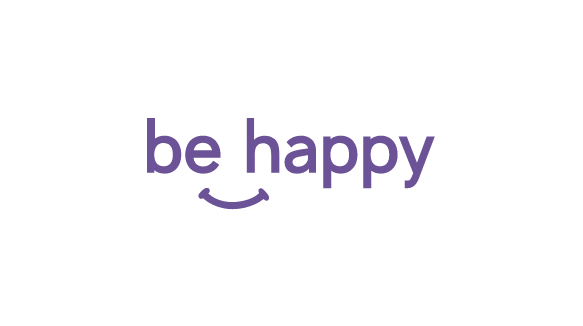
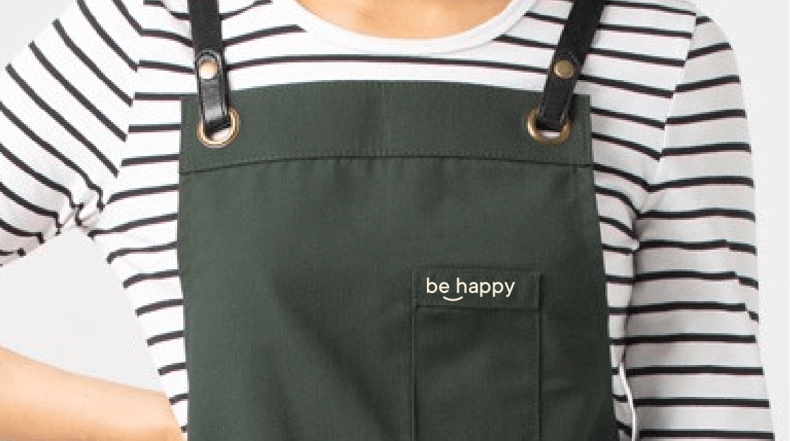
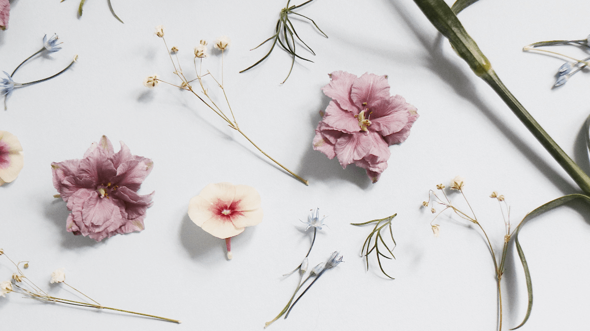
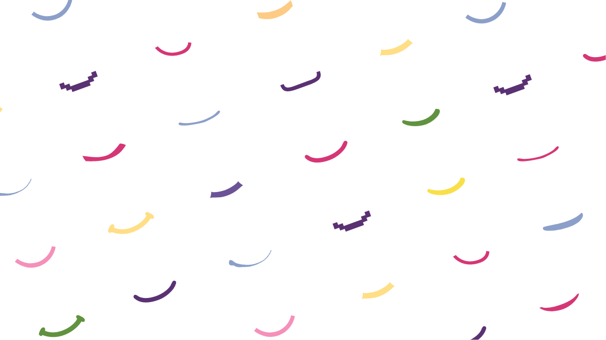
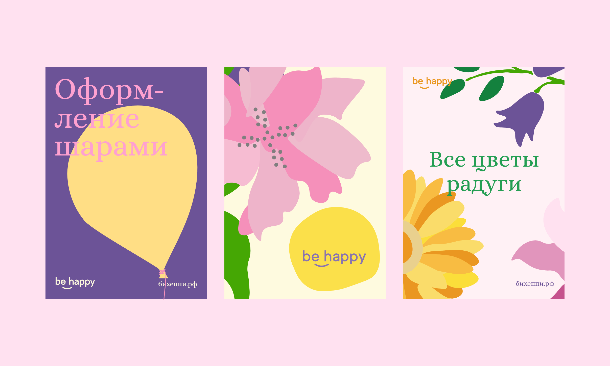
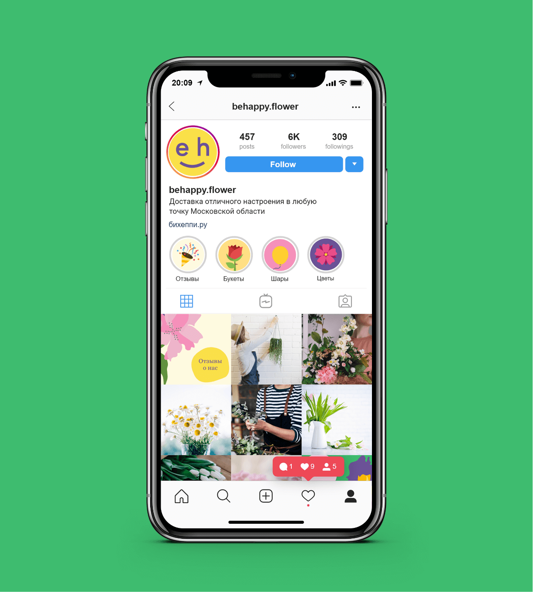
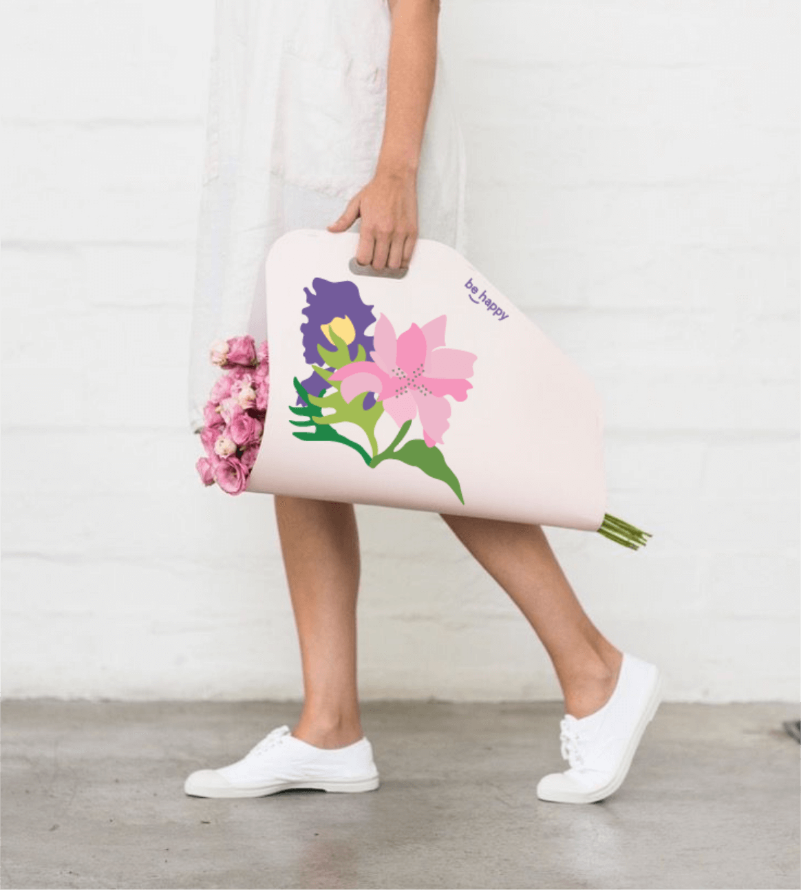
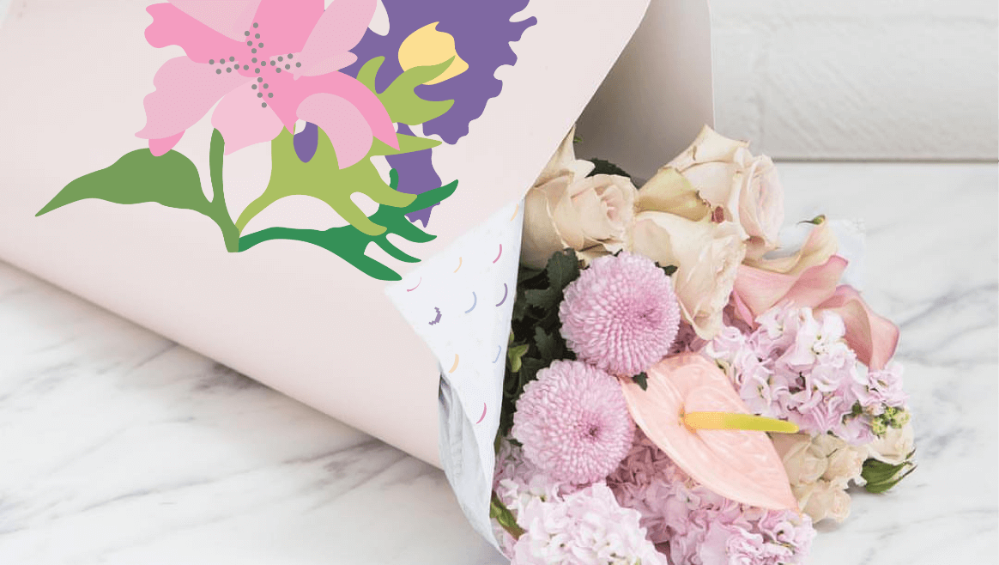
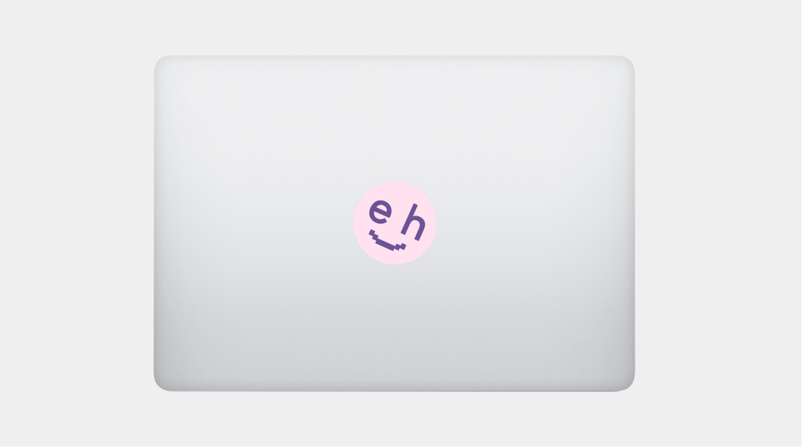
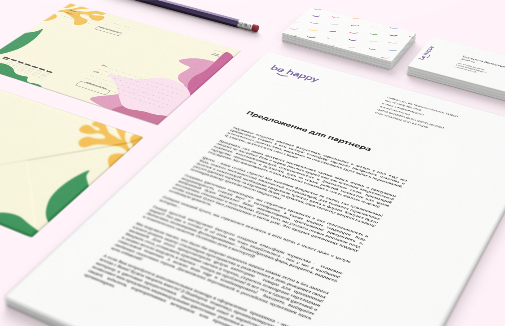
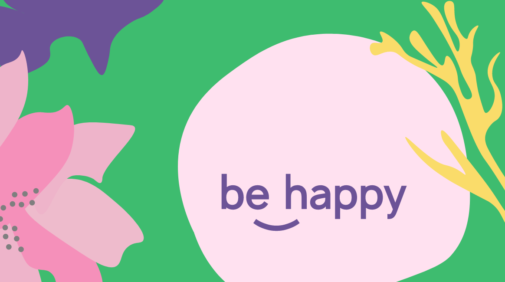
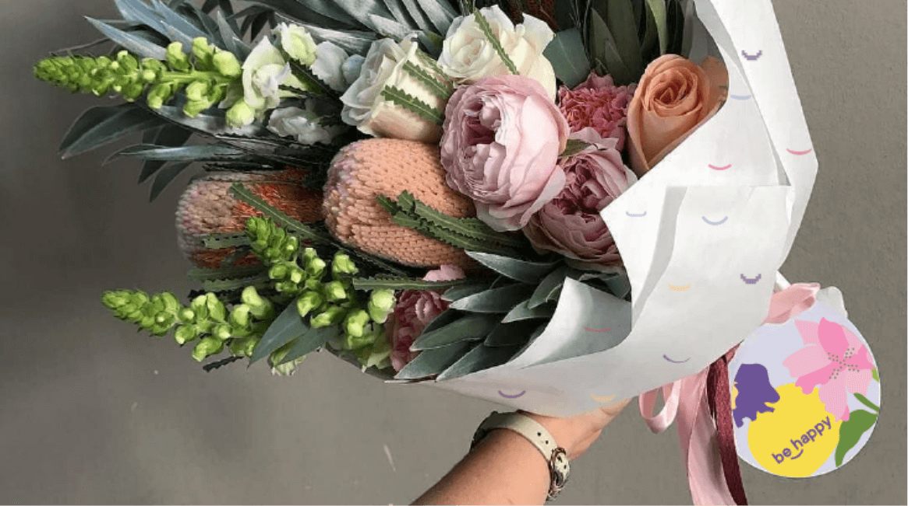
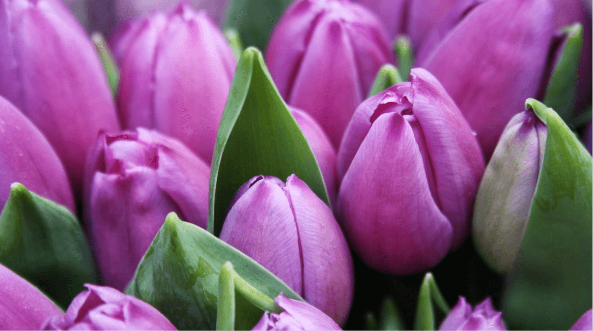
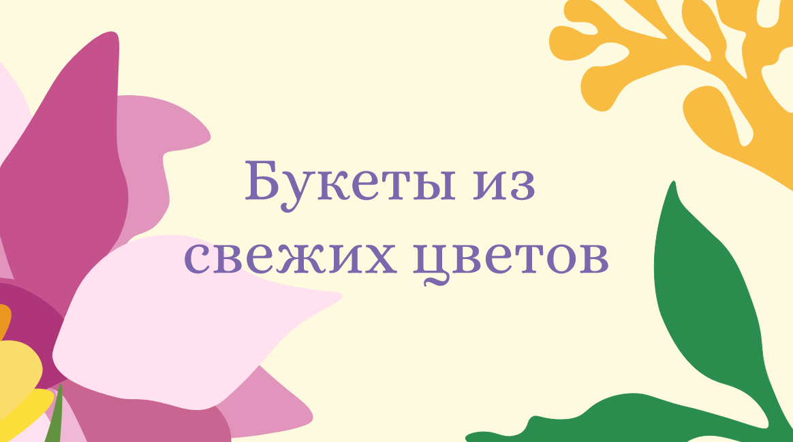
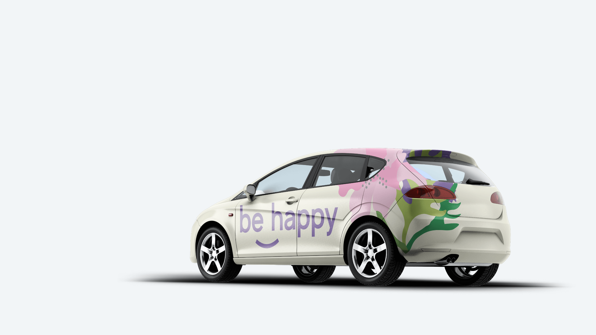